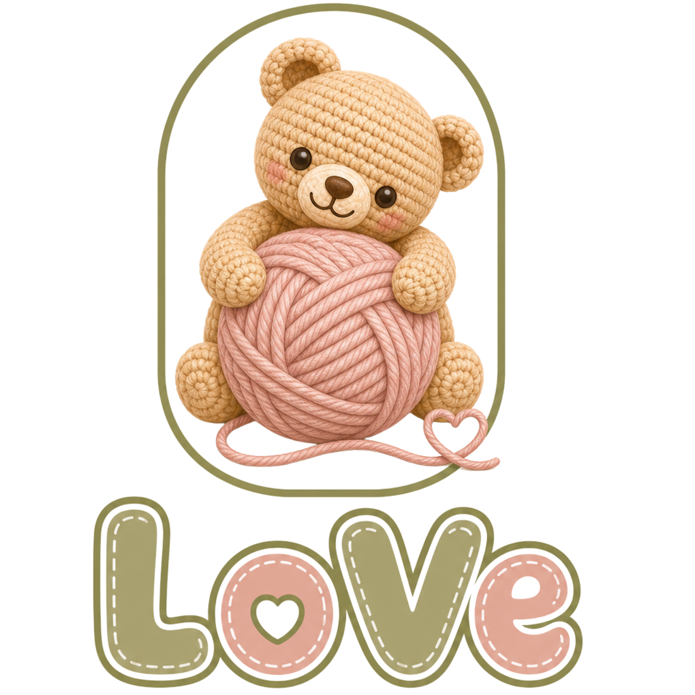
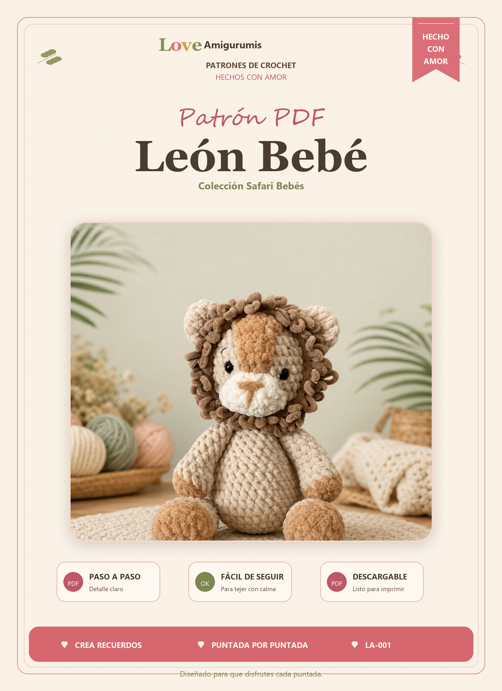
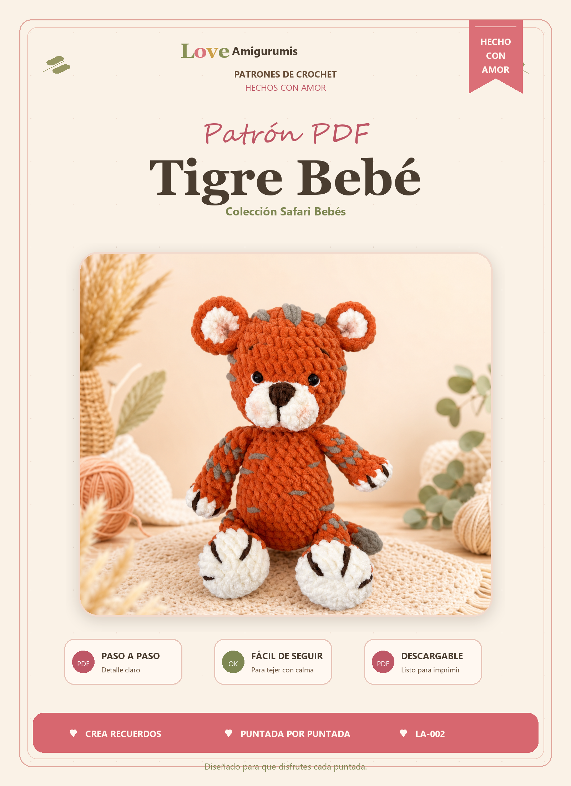
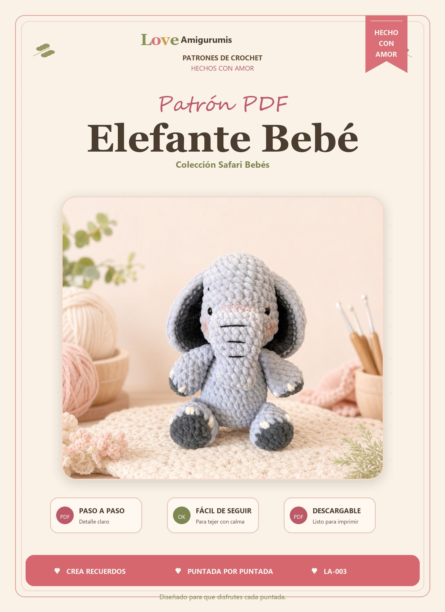
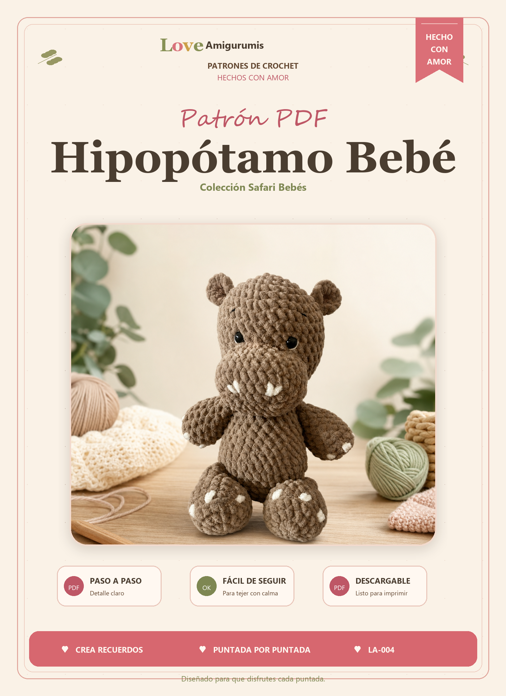
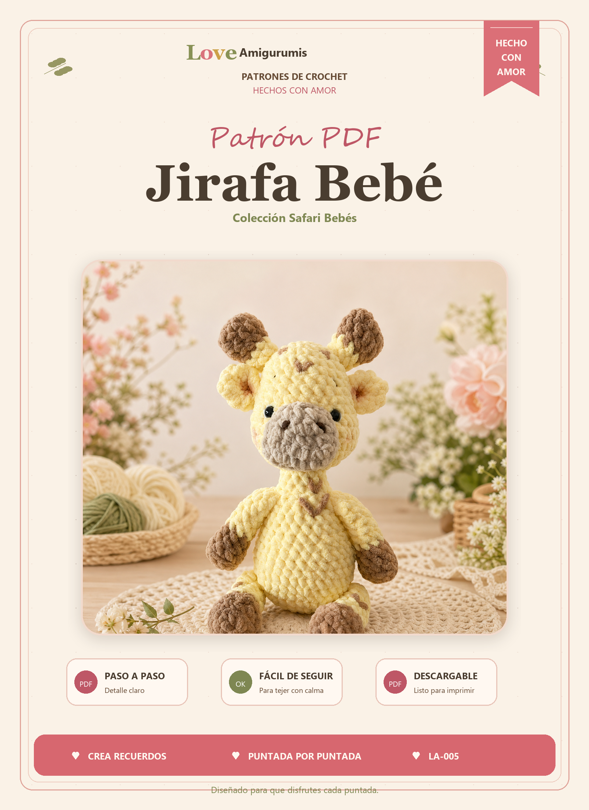
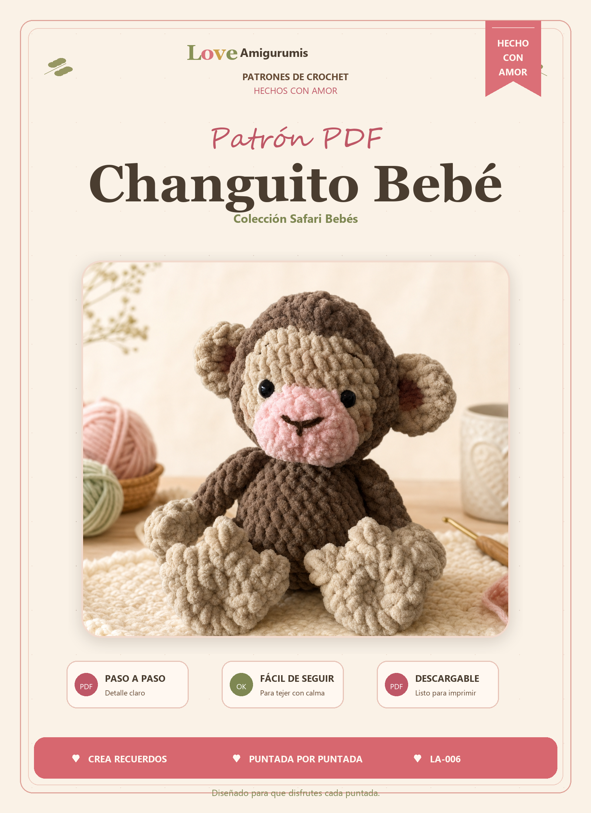
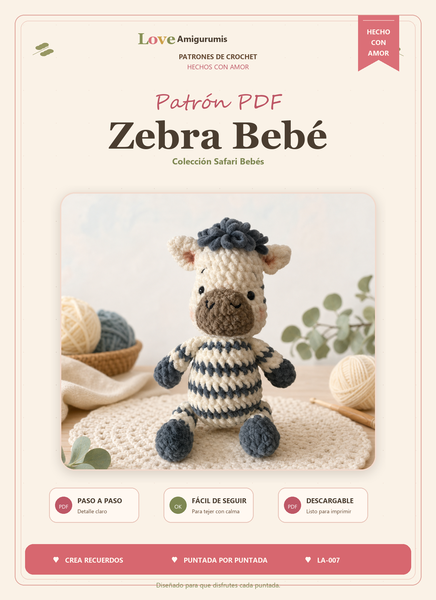
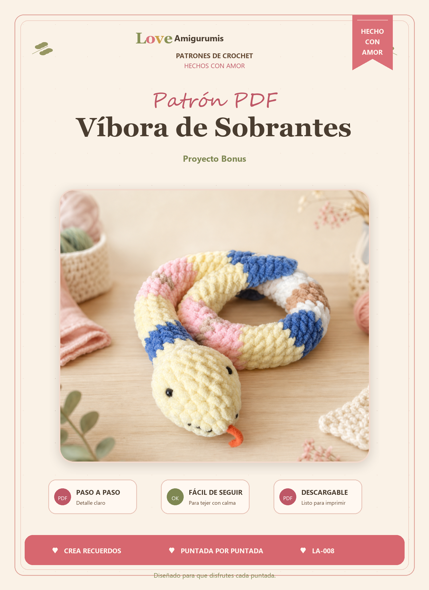

Patrones PDF de crochet, kits y artesanía tejida
Patrones de crochet para crear amigurumis con encanto.
LoveAmigurumis empieza con amigurumis de crochet, pero crecerá como una biblioteca de patrones, kits y productos artesanales: animales, personajes, prendas, accesorios y creaciones originales listas para venderse en formato digital o físico.
PDF de prueba desde $19 MXN
Crochet para principiantes
Kits aprox. $500-$600 MXN
Cursos con cupo limitado
Torreón, México
Catálogo comercial
Patrones de crochet, kits y artesanía
La estructura ya está lista para crecer con cada patrón de crochet digitalizado. Cada ficha podrá mostrar fotos reales, nivel de dificultad, materiales, precio del PDF y precio del kit.

PDF crochet
Safari Beb?s
Le?n Beb?
Patr?n PDF digital para tejer un le?n beb? de amigurumi con melena tejida y acabado tierno.
Patr?n PDF digital
Archivo listo para entrega
Producto digital. Te confirmamos pago y entrega del PDF por correo.

PDF crochet
Safari Beb?s
Tigre Beb?
Patr?n PDF digital para tejer un tigre beb? de amigurumi con detalles de rayas y patitas.
Patr?n PDF digital
Archivo listo para entrega
Producto digital. Te confirmamos pago y entrega del PDF por correo.

PDF crochet
Safari Beb?s
Elefante Beb?
Patr?n PDF digital para tejer un elefante beb? de amigurumi con orejas grandes y trompita.
Patr?n PDF digital
Archivo listo para entrega
Producto digital. Te confirmamos pago y entrega del PDF por correo.

PDF crochet
Safari Beb?s
Hipop?tamo Beb?
Patr?n PDF digital para tejer un hipop?tamo beb? de amigurumi con colmillitos y detalles suaves.
Patr?n PDF digital
Archivo listo para entrega
Producto digital. Te confirmamos pago y entrega del PDF por correo.

PDF crochet
Safari Beb?s
Jirafa Beb?
Patr?n PDF digital para tejer una jirafa beb? de amigurumi con cuernitos y manchas tejidas.
Patr?n PDF digital
Archivo listo para entrega
Producto digital. Te confirmamos pago y entrega del PDF por correo.

PDF crochet
Safari Beb?s
Changuito Beb?
Patr?n PDF digital para tejer un changuito beb? de amigurumi con carita rosa y manitas tejidas.
Patr?n PDF digital
Archivo listo para entrega
Producto digital. Te confirmamos pago y entrega del PDF por correo.

PDF crochet
Safari Beb?s
Zebra Beb?
Patr?n PDF digital para tejer una zebra beb? de amigurumi con rayas, copete y hocico tierno.
Patr?n PDF digital
Archivo listo para entrega
Producto digital. Te confirmamos pago y entrega del PDF por correo.

PDF crochet
Proyecto bonus
V?bora de Sobrantes
Patr?n PDF digital para aprovechar sobrantes de estambre y tejer una v?bora suave y colorida.
Patr?n PDF digital
Archivo listo para entrega
Producto digital. Te confirmamos pago y entrega del PDF por correo.
Fotos que venden
Una vitrina para enamorar antes de comprar
Aquí irán las fotos increíbles de cada pieza terminada. La idea es que el cliente vea el resultado, se imagine haciendo crochet y elija entre comprar el PDF o el kit completo.
Producto terminado
Puntadas y textura
Estambres del kit
De patrón a pieza final
Cursos en línea
Clases con cupo limitado para aprender crochet desde cero.
Además de vender patrones y kits, LoveAmigurumis puede abrir cursos en línea por proyecto: el cliente aparta su lugar, paga desde la app o canal de compra, entra a una clase guiada de crochet y después puede recibir la grabación para repetir el proceso.
Aparta tu lugar
Cada curso tendrá una cantidad limitada de espacios para cuidar la atención y el ritmo.
Pago en línea
El pago podrá integrarse a la app o canal de compra junto con PDFs, kits y pedidos.
Clase grabada
La sesión se graba y más adelante se puede vender como descarga o curso bajo demanda.
Carpetas del catálogo
Una biblioteca artesanal en crecimiento
Conforme digitalicen los patrones, cada carpeta puede convertirse en categoría con sus propios productos, fotos, kits y ebooks.
Animales
Osos, conejos, gatitos, perritos, dinosaurios, criaturas del bosque y marinos.
Personajes
Muñecos originales, figuras temáticas, parejas, profesiones y colecciones especiales.
Prendas
Ropa tejida, piezas de temporada y patrones de crochet que amplían la marca más allá del amigurumi.
Accesorios
Llaveros, bolsitas, adornos, detalles pequenos y productos rapidos de elaborar.
Temporadas
Navidad, San Valentín, Halloween, baby shower, regalos escolares y fechas especiales.
Ebooks familiares
Paquetes con varios patrones relacionados para vender colecciones más completas.
Sistema de venta
Primero catalogamos, luego escalamos.
La página queda preparada para empezar simple por correo y crecer hacia una tienda más automatizada cuando haya fotos, PDFs finales, precios cerrados y redes sociales.
Fotografiar
Tomar fotos atractivas del producto terminado, materiales, detalles y proceso.
Digitalizar
Convertir cada patrón de crochet en PDF o ebook claro, bonito y fácil de seguir.
Vender y ensenar
Ofrecer PDF económico, kit completo, producto sobre pedido o curso de crochet con cupo limitado.
Contacto
Construyamos el catálogo pieza por pieza.
Escribe para comprar un patrón de crochet, pedir un kit, cotizar productos sobre pedido o preguntar por una categoría específica.